A cave gate is a band of soft rock across a tunnel: the lock on that way through. It stood at the tunnel's middle, so where the tunnel held a pool the soft rock lay across water. Now a gate on a wet tunnel moves along it to the nearest dry place with rock at both ends; where the tunnel is a pool all along, the gate stands on a dry bank. Every picture pairs main (before) with this change (after): same planet, same seed, same moment, 1 s in.
Distances in map cells, two to a dish cell. Only caves that rolled pools change (11 of 20); the rest of each planet is the same.
The gate is the pale band in the middle of each frame.
soft rock in water on this cave 5 → 0 gates · this gate moved about 40 map cells
Before, the gate stood across the tunnel where its pool opens out, water at its lower end. After, it stands further up the tunnel, rock at both ends and dry ground under it; the pool is all on one side.
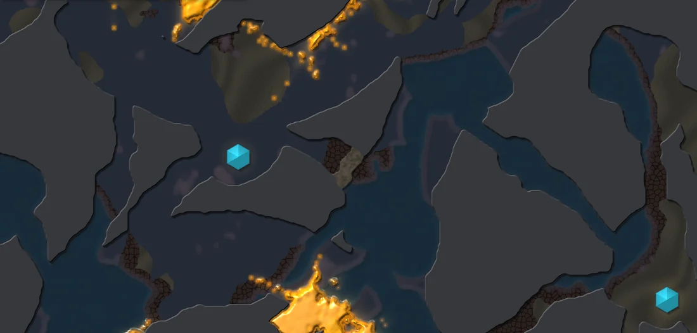
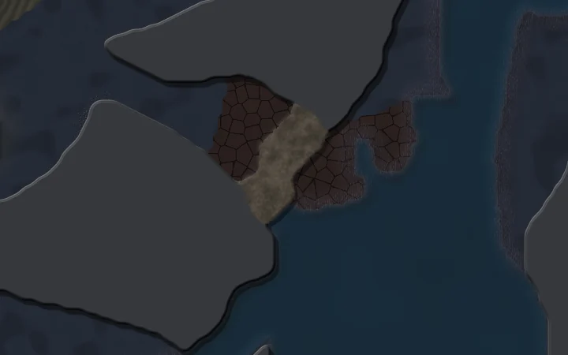
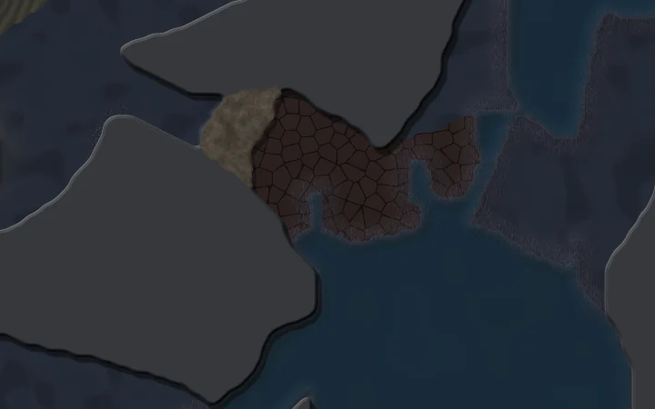
soft rock in water on this cave 5 → 0 gates · this gate moved about 55 map cells
Before, a pool ran under the gate's lower half. After, the gate stands at the tunnel's dry end, and the pool stays where it was.
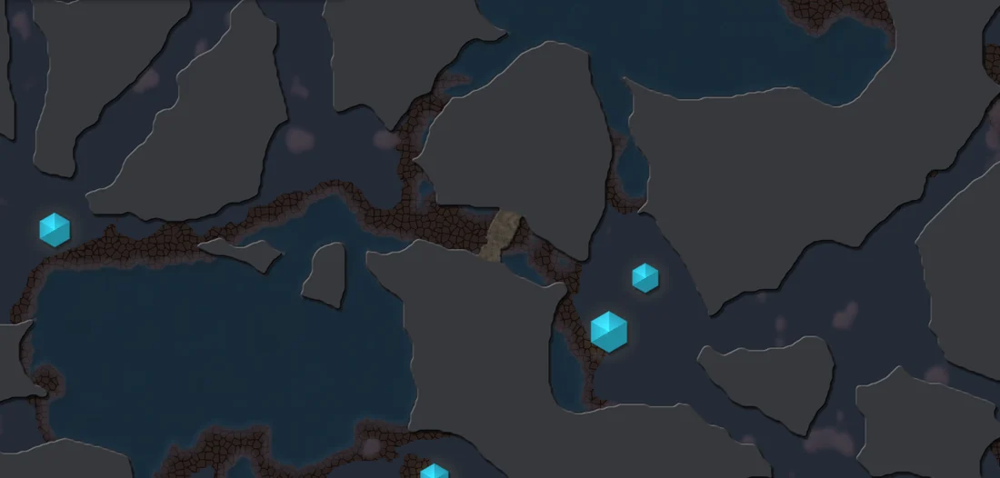
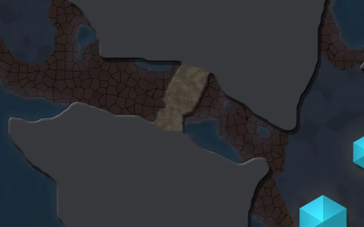
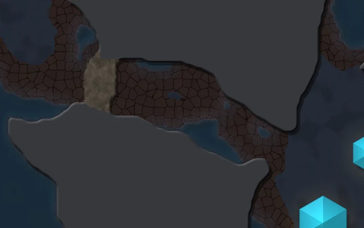
soft rock in water on this cave 5 → 0 gates · this tunnel is a pool all along
Before, the gate stood in the water. After, the water under it and 16-30 cells either side is let out, with a ragged edge; the clay under a pool stays, so the bank is the dark blue-grey strip either side of the soft rock. 49 gates stand on a bank like this, most of them gates that were dry already but had water within a few cells. Whether it reads well close up is for your eyes.
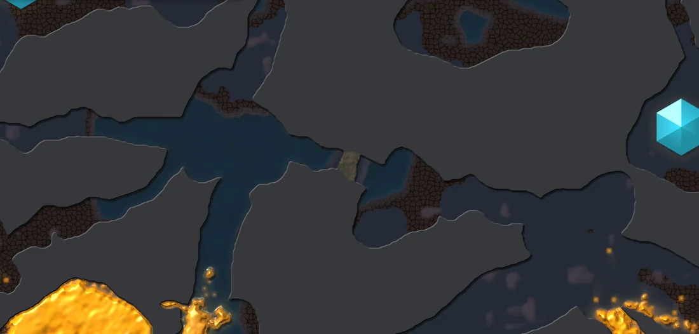
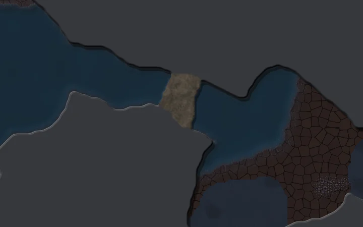
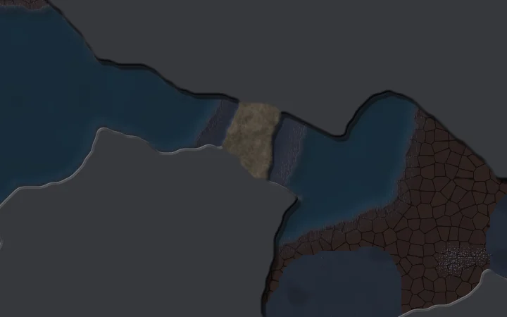
Before on the left, after on the right. Water blue, tunnels and caverns olive, rock grey, soft rock magenta, crystals cyan, nests ringed red, the landing a yellow square.
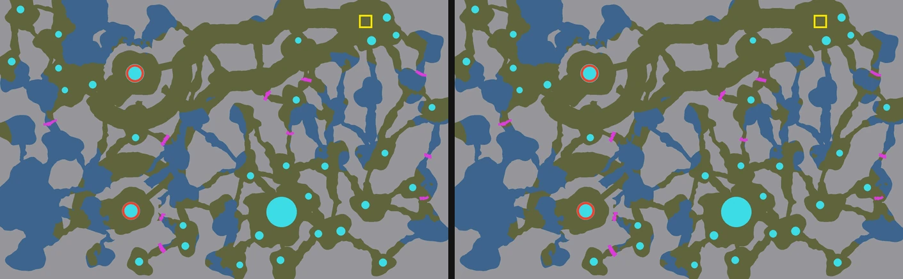
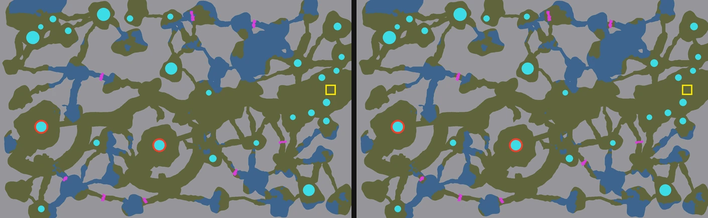
| Before | After | |
|---|---|---|
| Soft-rock chains with a piece in water | 40 of 163 | 1 of 164 |
| Soft-rock pieces in water | 138 of 652 | 2 of 656 |
| Caves with soft rock in water (11 rolled pools) | 11 | 1 |
| Gates moved along their tunnel | 19 (median 38, at most 84 cells) | |
| Gates on a dry bank | 49 | |
| Wet share of the map | 1 point less on 4 of the 11 pool caves | |
| Dry caves (9) | the same maps, byte for byte | |
| Walks, open charge, doors | the same on every seed | |
| First-try builds (of 20) | 19 | 19 |
| Build, mean per planet (median of three runs) | 595 ms | 571 ms |
The one left: a gate on seed 18 touches water at one sample point, at a joint of its pieces. Seed 3 has one more gate: a gate is left out where it would cross a road or a nest's door, and the one whose tunnel's middle crossed a road now stands further along, off it.